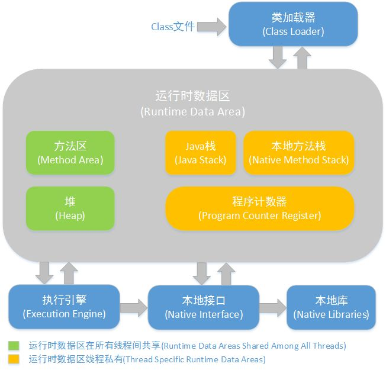
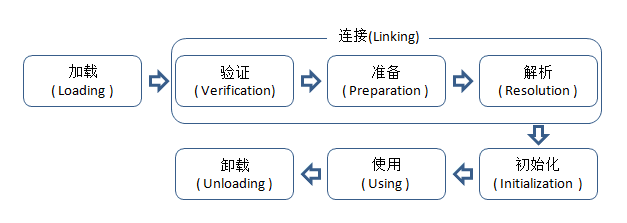
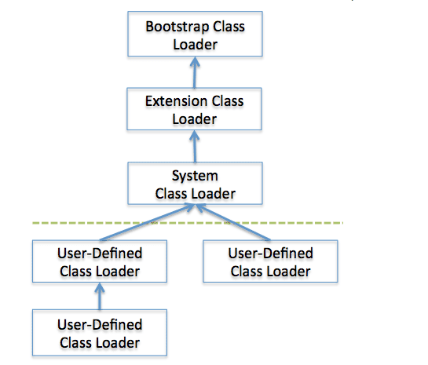
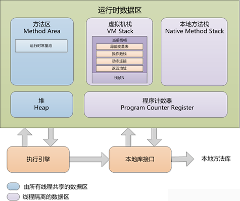

java实现跨平台的原理
- java实现跨平台的原理是基于JVM实现的，即Java Virtual Machine,对于不同机器平台有不同的JVM版本（JVM本身是用C/C++实现的），通过模拟一台计算机来达到一个计算机所具有的计算功能，底层都是运行编译器生成的java字节码文件，实现了 “一次编译，到处运行” 的目的。
总结： JVM 屏蔽了与各个计算机平台相关的软件或者硬件之间的差异，使得与平台相关的耦合统一由 JVM 提供者来实现JVM的组成以及各部分详解
JVM的基本结构是由4部分组成的： - 类加载器，在 JVM 启动时或者类运行时将需要的 class 加载到 JVM 中；
- 执行引擎，执行引擎负责执行class文件包含的字节码指令，相当于机器的CPU；
- 内存区，将内存划分成若干个区域，模拟机器上上的存储，记录和调度功能模块，比如各种功能的寄存器和PC指针记录器；
- 本地方法调用，调用C/C++实现的本地代码的返回结果；
类加载器基本原理
类加载器（class loader），用来加载java类到虚拟机中。一般来说，java虚拟机使用java的过程如下：java源程序经过java编译器转化之后变化成java字节码文件。类加载器负责读取java字节码文件，并转化成java.lang.Class的一个实例，每个实例就是一个java类,通过实例的newInstance()方法生成该类的一个对象，或者使用java动态代理生成的会有更复杂的过程，或者通过网络下载的。补充：java判断2个对象的过程
第一步查看类名是否相同，第二步查看类加载器是否相同，只有2者都是相同的情况下才会被认为2者是相同的。具体来说，可以在不同包里面新建2个相同类名的类，进行编译运行测试，判断2者是否属于相同，判断对象是否相同可以用.equal()方法；类加载器加载class文件的详细过程
 - 第一阶段找到这个class文件，并且 把它加载到内存中；
- 第二阶段分为3个小步骤，即
- 字节码验证；
- class类数据分析；
- 相应的内存分配与符号链接；
- 第三个阶段是静态属性和初始化赋值，静态代码块的执行；
#####（1）加载阶段的详细分析
查找并加载类的二进制数据时的类加载的第一个阶段，即加载阶段需要执行3个操作： - 通过一个类的全限定名称来获取其定义的二进制流；
- 将二进制的静态存储结构转化为方法区的运行时数据结构；
- 在java堆中生成一个这个类的java.lang.Class对象，作为对方法区中的这些数据的访问入口。
相对于类加载的其他阶段而言，加载阶段（准确地说，是加载阶段获取类的二进制字节流的动作）是可控性最强的阶段，因为开发人员既可以使用系统提供的类加载器来完成加载，也可以自定义自己的类加载器来完成加载。
加载阶段完成后，虚拟机外部的二进制字节流就按照虚拟机所需的格式存储在方法区之中，而且在Java堆中也创建一个 java.lang.Class类的对象，这样便可以通过该对象访问方法区中的这些数据。
#####（2）连接阶段详细分析
验证：确保被加载的类的正确性
验证是连接阶段的第一步，这一阶段的目的是为了确保Class文件的字节流中包含的信息符合当前虚拟机的要求，并且不会危害虚拟机自身的安全。验证阶段大致会完成4个阶段的检验动作：
- 文件格式验证：验证字节流是否符合Class文件格式的规范；例如：是否以 0xCAFEBABE开头、主次版本号是否在当前虚拟机的处理范围之内、常量池中的常量是否有不被支持的类型。
- 元数据验证：对字节码描述的信息进行语义分析（注意：对比javac编译阶段的语义分析），以保证其描述的信息符合Java语言规范的要求；例如：这个类是否有父类，除了 java.lang.Object之外。
- 字节码验证：通过数据流和控制流分析，确定程序语义是合法的、符合逻辑的。
- 符号引用验证：确保解析动作能正确执行。
验证阶段是非常重要的，但不是必须的，它对程序运行期没有影响，如果所引用的类经过反复验证，那么可以考虑采用 -Xverifynone 参数来关闭大部分的类验证措施，以缩短虚拟机类加载的时间。
准备：为类的静态变量分配内存，并将其初始化为默认值
准备阶段是正式为类变量分配内存并设置类变量初始值的阶段，这些内存都将在方法区中分配。对于该阶段有以下几点需要注意：
- 这时候进行内存分配的仅包括类变量（static），而不包括实例变量，实例变量会在对象实例化时随着对象一块分配在Java堆中。
- 这里所设置的初始值通常情况下是数据类型默认的零值（如0、0L、null、false等），而不是被在Java代码中被显式地赋予的值。
假设一个类变量的定义为： public static int value = 3;
那么变量value在准备阶段过后的初始值为 0，而不是 3，因为这时候尚未开始执行任何 Java 方法，而把 value 赋值为 3 的public static指令是在程序编译后，存放于类构造器
这里还需要注意如下几点：
- 对基本数据类型来说，对于类变量（static）和全局变量，如果不显式地对其赋值而直接使用，则系统会为其赋予默认的零值，而对于局部变量来说，在使用前必须显式地为其赋值，否则编译时不通过。
- 对于同时被static和final修饰的常量，必须在声明的时候就为其显式地赋值，否则编译时不通过；而只被final修饰的常量则既可以在声明时显式地为其赋值，也可以在类初始化时显式地为其赋值，总之，在使用前必须为其显式地赋值，系统不会为其赋予默认零值。
- 对于引用数据类型reference来说，如数组引用、对象引用等，如果没有对其进行显式地赋值而直接使用，系统都会为其赋予默认的零值，即null。
- 如果在数组初始化时没有对数组中的各元素赋值，那么其中的元素将根据对应的数据类型而被赋予默认的零值。
- 如果类字段的字段属性表中存在 ConstantValue 属性，即同时被 final 和 static 修饰，那么在准备阶段变量 value 就会被初始化为 ConstValue 属性所指定的值。
假设上面的类变量 value 被定义为： public static final int value = 3;
编译时 Javac 将会为 value 生成 ConstantValue 属性，在准备阶段虚拟机就会根据 ConstantValue 的设置将 value 赋值为 3。我们可以理解为 static final 常量在编译期就将其结果放入了调用它的类的常量池中。
解析：把类中的符号引用转换为直接引用
#####（3）初始化阶段详细分析
初始化，为类的静态变量赋予正确的初始值，JVM负责对类进行初始化，主要对类变量进行初始化。在Java中对类变量进行初始值设定有两种方式：
- 声明类变量是指定初始值
- 使用静态代码块为类变量指定初始值
JVM初始化步骤
- 假如这个类还没有被加载和连接，则程序先加载并连接该类
- 假如该类的直接父类还没有被初始化，则先初始化其直接父类
- 假如类中有初始化语句，则系统依次执行这些初始化语句
类初始化时机：只有当对类的主动使用的时候才会导致类的初始化，类的
主动使用包括以下六种：
- 创建类的实例，也就是new的方式
- 访问某个类或接口的静态变量，或者对该静态变量赋值
- 调用类的静态方法
- 反射（如 Class.forName(“com.shengsiyuan.Test”)）
- 初始化某个类的子类，则其父类也会被初始化
- Java虚拟机启动时被标明为启动类的类（ JavaTest），直接使用 java.exe命令来运行某个主类
结束生命周期
在如下几种情况下，Java虚拟机将结束生命周期
- 执行了 System.exit()方法
- 程序正常执行结束
- 程序在执行过程中遇到了异常或错误而异常终止
- 由于操作系统出现错误而导致Java虚拟机进程终止
双亲委派模型（Parent Delegation Model）
类的加载过程采用双亲委派机制，这种机制能更好的保证 Java 平台的安全性。
类加载器 ClassLoader 是具有层次结构的，也就是父子关系，其中，Bootstrap 是所有类加载器的父亲，如下图所示：

该模型要求除了顶层的 Bootstrap class loader 启动类加载器外，其余的类加载器都应当有自己的父类加载器。子类加载器和父类加载器不是以继承（Inheritance）的关系来实现，而是通过组合（Composition）关系来复用父加载器的代码。每个类加载器都有自己的命名空间（由该加载器及所有父类加载器所加载的类组成，在同一个命名空间中，不会出现类的完整名字（包括类的包名）相同的两个类；在不同的命名空间中，有可能会出现类的完整名字（包括类的包名）相同的两个类）。
双亲委派模型的工作过程如下：
- 当前 ClassLoader 首先从自己已经加载的类中查询是否此类已经加载，如果已经加载则直接返回原来已经加载的类。
每个类加载器都有自己的加载缓存，当一个类被加载了以后就会放入缓存，等下次加载的时候就可以直接返回了。
- 当前 ClassLoader 的缓存中没有找到被加载的类的时候，委托父类加载器去加载，父类加载器采用同样的策略，首先查看自己的缓存，然后委托父类的父类去加载，一直到 bootstrap ClassLoader。
当所有的父类加载器都没有加载的时候，再由当前的类加载器加载，并将其放入它自己的缓存中，以便下次有加载请求的时候直接返回。
这样设计的原因：
这是对于使用这种模型来组织累加器的好处；主要是为了安全性，避免用户自己编写的类动态替换 Java 的一些核心类，比如 String，同时也避免了重复加载，因为 JVM 中区分不同类，不仅仅是根据类名，相同的 class 文件被不同的 ClassLoader 加载就是不同的两个类，如果相互转型的话会抛java.lang.ClassCaseException。
JVM内存管理
（1）内存划分

1.方法区（线程共享）：各个线程共享的一个区域，用于存储虚拟机加载的类信息、常量、静态变量、即时编译器编译后的代码等数据。虽然 Java 虚拟机规范把方法区描述为堆的一个逻辑部分，但是它却又一个别名叫做 Non-Heap（非堆），目的应该是与 Java 堆区分开来。
- 运行时常量池：是方法区的一部分，用于存放编译器生成的各种字面量和符号引用。
2.堆内存（线程共享）：所有线程共享的一块区域，垃圾收集器管理的主要区域。目前主要的垃圾回收算法都是分代收集算法，所以 Java 堆中还可以细分为：新生代和老年代；再细致一点的有 Eden 空间、From Survivor 空间、To Survivor 空间等，默认情况下新生代按照8:1:1的比例来分配。根据 Java 虚拟机规范的规定，Java 堆可以处于物理上不连续的内存空间中，只要逻辑上是连续的即可，就像我们的磁盘一样；
3.程序计数器： Java 线程私有，类似于操作系统里的 PC 计数器，它可以看做是当前线程所执行的字节码的行号指示器。如果线程正在执行的是一个 Java 方法，这个计数器记录的是正在执行的虚拟机字节码指令的地址；如果正在执行的是 Native 方法，这个计数器值则为空（Undefined）。此内存区域是唯一一个在 Java 虚拟机规范中没有规定任何 OutOfMemoryError 情况的区域；
4.虚拟机栈（栈内存）：Java线程私有，虚拟机展描述的是Java方法执行的内存模型：每个方法在执行的时候，都会创建一个栈帧用于存储局部变量、操作数、动态链接、方法出口等信息；每个方法调用都意味着一个栈帧在虚拟机栈中入栈到出栈的过程；
5.本地方法栈 ：和Java虚拟机栈的作用类似，区别是该区域为 JVM 提供使用 native 方法的服务；
作者：我没有三颗心脏
链接：https://www.jianshu.com/p/bfb876565a1e
來源：简书
简书著作权归作者所有，任何形式的转载都请联系作者获得授权并注明出处。